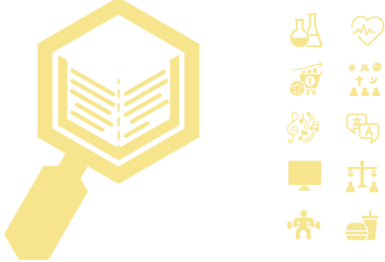

Información sobre la asignatura

Contenidos
- Planificar la elección de un tema de investigación, que será libre a tu elección, sobre algún tema que te interese.
- Elaborar un informe con lo investigado: introducción, método, resultados, discusión, conclusiones y bibliografía.
- Elaborar una presentación con la que realizar la exposición sobre el trabajo realizado.
Cómo realizar el informe

¿Para qué sirve?
Te será útil para aprender a realizar un proyecto de investigación siguiendo el método científico. Si pretendes continuar con estudios universitarios o ciclos formativos de grado superior te será de gran utilidad, ya que en ambos estudios es necesario realizar un proyecto de investigación para obtener el título.
Método de trabajo
Será eminentemente práctico, sin libro de texto. Eliges un tema a principio de curso y se elabora un trabajo que será guiado y tutorado por el profesor. No hay exámenes y se evaluará a final de curso a partir de dos criterios:
- Trabajo escrito realizado a lo largo del curso.
- Presentación oral de un resumen del trabajo.
Ver proyectos